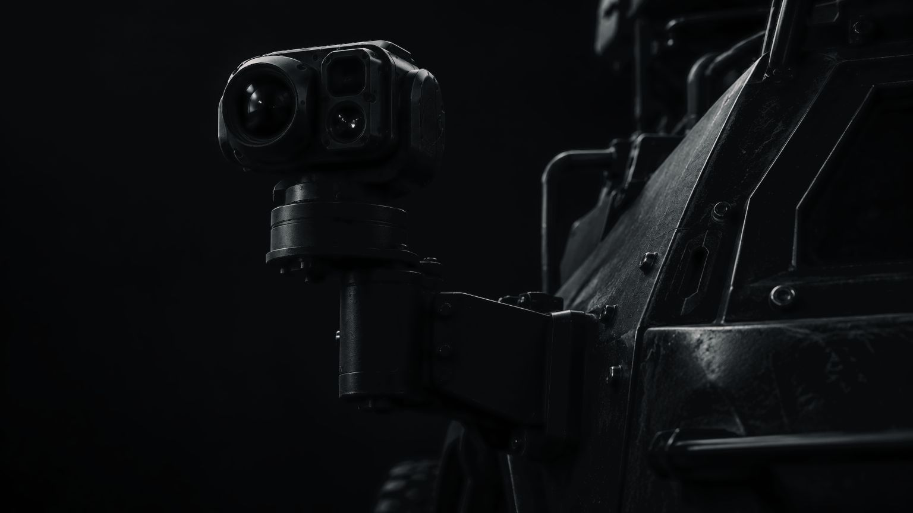
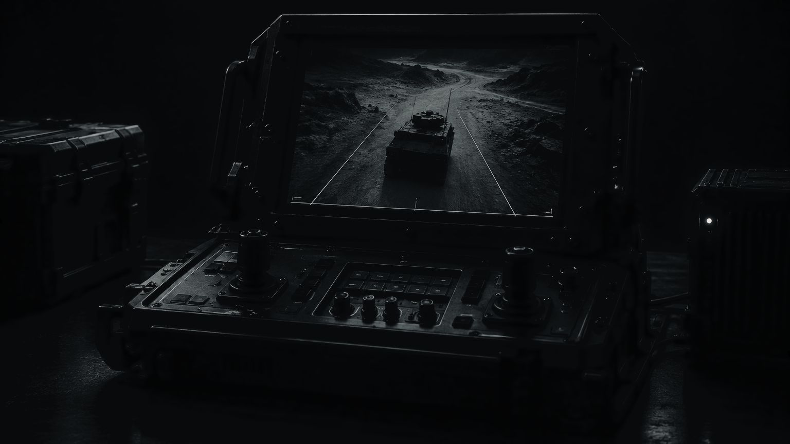

BACKEYE
See the whole vehicle
Onboard cameras show the surroundings from fixed points on the vehicle’s body.
BACKEYE adds a third-person view: the aerial camera image is combined with vehicle data, so the operator can assess the vehicle’s movement and its surroundings at the same time.


Third-person view
What the system includesDock stores, launches, and receives the cameras, and handles charging and diagnostics. While one camera is working, another prepares for its next flight.
Movement, inspection, and work
Core use casesCapabilities
The view from the right angleThe outside perspective shows the platform and nearby objects, making it easier to judge position and dimensions.
AGATA brings together onboard cameras, the external view, vehicle readings, and Dock.
For compatible ground robots and remotely operated vehicles. NOMAD is one planned integration area.
The aerial camera can use BLACKFLY modules, and communications can use HEX devices.
Request a presentation
Tell us about your task — we will prepare materials for your use case. Details are shared after a non-disclosure agreement.
We reply within two business days.